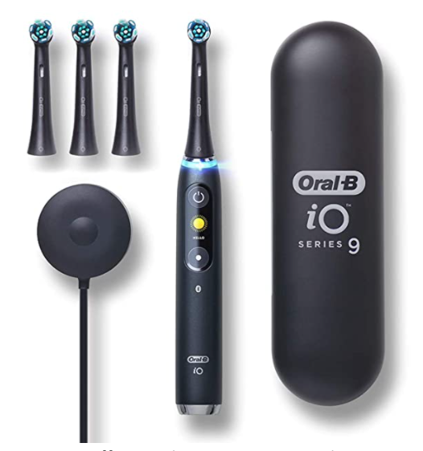
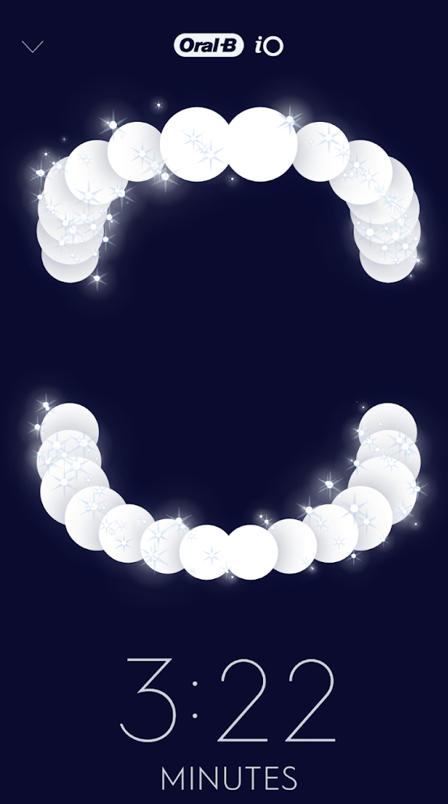
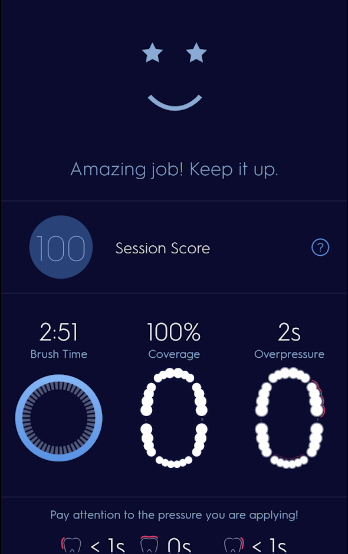

Table of Contents
1 はじめに
私の加入しているものも含めて、アメリカの歯科保健は検査は無料、治療は有料、そして上限無しなことが多いようです。歯磨きをサボるとダイレクトに治療費に跳ね返ってくるので歯磨きは日本にいた時以上にしっかりすることにしています。そんなこともあって、ついにブラックフライデーセールで気になっていた電動歯ブラシを買ってしまいました。
2 iO Series 9
買ったのはOral-BのiO Series 9という最新モデルです。定価$300もする高級歯ブラシですが、ブラックフライデー割引で$250まで下がった時に買いました。交換用含めてブラシが4本付いているため、家族で共用しています。
 (amazon.comから借用)
ハイエンド製品らしく、非接触型の充電器が付属しています。洗面所は水を使う場所なので、非接触型充電器との相性が良いです。
3 使ってみる
実は、電動歯ブラシは初めてです。ブラシに歯磨き粉を少しつけて本体に差し、動かしてみます。このモデルには圧力センサーが付いていて、力の過不足をランプの色で表示してくれます。どうも私の持ち方だと弱すぎるようで、普通に持っていたら、圧力が弱いことを示すピンク色になってしまいました。適度な圧力を示す緑色にするには、思ったよりも強く持たないと駄目なようです。
また、ブラシのサイズは一見小さいように見えますが、唇と歯の間に入れるのが結構大変で、指で唇を浮かせないとうまく入りません。まあ、アメリカの歯ブラシは何故かどれも大きいので、アメリカ人にはこのサイズでも普通なのかもしれません。
3,4分かけてとりあえず一通り磨きました。初回だけ、少し歯茎から出血しました。
4 連携アプリ
Oral-Bの電動歯ブラシにはスマホ用のアプリがあります。自分のPixel 4 (Android)に入れて使ってみます。
iO Series 9には3Dセンサーが付いていて、スマホと連動すると、磨き残しがわかるようになっています。これは磨き終わって100%にしたところ。 
当然ですが100%にしないと気持ち悪いので、無理矢理にでも100%にします。しかし、この3Dセンサーの精度がいまいち微妙で、磨いていない部分が磨いたことになっていたりします。100%にするために、最後に何度も同じところを磨くことになりますが、あまり意味がない気がします。。。 
あと、条件がまだよくわかりませんが、3割くらいの確率で歯磨きが終了したことをアプリが認識しません。歯磨き範囲を100％にした後で歯ブラシを切るのですが、歯磨き範囲を表示する画面から遷移しないままになります。こうなると、アプリのガイド無しで歯磨きしたと認識され、歯磨きした時間しかヒストリーに残りません。
磨き残しを正確に判断できず、履歴もきちんと残らないことから、3Dセンサーもアプリも実質的には大した付加価値は無いように思います。これらの機能のために最新の高い機種を買う価値は無いかもしれません。
5 終わりに
今の所アプリと連携させて使っていますが、しばらく楽しんだら、電動歯ブラシ単体での使用に切り替えるつもりです。
磨き残しセンサーが役に立たないため、手動での歯磨きを併用しています。おかげで、これまでよりずっとしっかりと歯磨きするようになりました。そういう意味で、本来の目的は達したと言えるかもしれません。